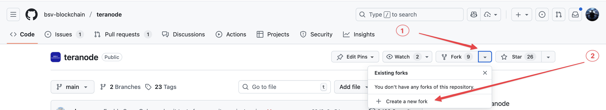
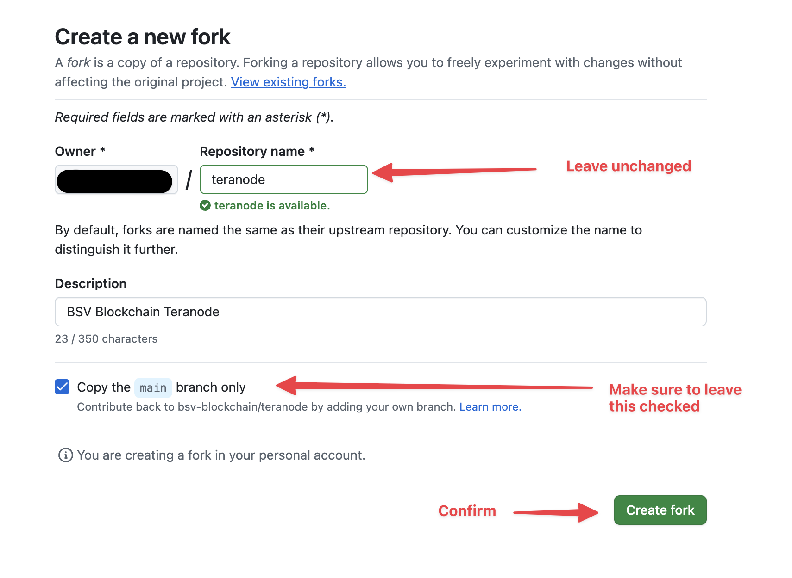
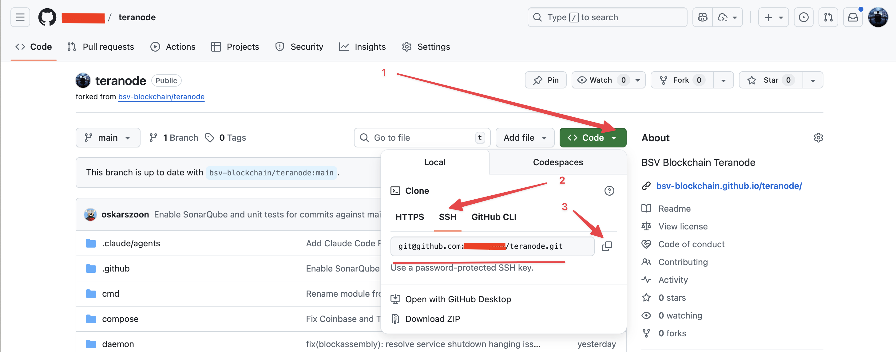
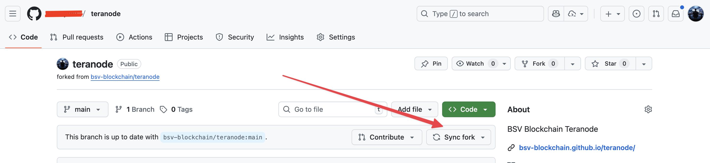

Teranode Public Repository: Fork and Pull Request Guidelines
Overview
The Teranode public repository is hosted at https://github.com/bsv-blockchain/teranode. Like most public repositories, direct commits to the main repository are not permitted. Instead, contributors must use a fork-and-pull-request workflow. This document provides a comprehensive guide to this process.
Table of Contents
- Understanding Forks
- Step 1: Create Your Fork
- Step 2: Clone Your Fork Locally
- Step 3: Protect Your Main Branch (Recommended)
- Step 4: Keep Your Fork Synchronized
- Step 5: Working on Features and Creating Pull Requests
- Quick Reference Commands
- Summary Workflow
- Need Help?
Understanding Forks
What is a Fork?
A fork is a complete copy of a repository that lives under your own GitHub account. When you fork a repository:
- Original Repository (
bsv-blockchain/teranode): This is the authoritative source maintained by the BSV Blockchain organization. You cannot directly push changes here. - Your Fork (
YOUR_USERNAME/teranode): This is your personal copy where you have full control. You can create branches, commit changes, and experiment freely.
Why Fork?
Forking allows you to:
- Work independently without affecting the original repository
- Experiment with changes safely
- Propose changes back to the original project via pull requests
- Maintain your own version of the codebase while staying synchronized with updates
Best Practices
- Keep your fork synchronized: Regularly sync with the upstream repository to avoid diverging too far from the main codebase
- One fork per contributor: You only need one fork per repository—create multiple branches within your fork for different features
- Don't commit to your main branch: Keep your fork's
mainbranch clean and aligned with upstream. Always work in feature branches - Descriptive branch names: Use clear, descriptive names like
feature/add-loggingorbugfix/connection-timeout
Step 1: Create Your Fork
-
Navigate to https://github.com/bsv-blockchain/teranode
-
Click the "Fork" button in the top-right corner of the page

-
Configure your fork:
-
Owner: Select your GitHub account
- Repository name: Keep it as
teranode(or customize if needed) - Description: Optional—you can add a custom description
-
Copy the main branch only: ✓ Check this box (recommended for cleaner setup)

-
Click "Create fork"
Your fork will now be available at https://github.com/YOUR_USERNAME/teranode
Step 2: Clone Your Fork Locally
1. Get Your Repository URL
Navigate to your forked repository at https://github.com/YOUR_USERNAME/teranode and click the green "Code" button. Copy the SSH URL (recommended) or HTTPS URL.

2. Clone the Repository
Open your terminal and run:
git clone git@github.com:YOUR_GITHUB_USERNAME/teranode.git
Replace YOUR_GITHUB_USERNAME with your actual GitHub username.
3. Add the Upstream Remote
Navigate into your cloned repository and add a reference to the original repository:
cd teranode
# Add the original repository as "upstream"
git remote add upstream https://github.com/bsv-blockchain/teranode.git
Why do we need an upstream remote?
When you clone your fork, Git automatically sets up origin to point to your fork. However, you also need a way to pull in changes from the original repository as it evolves. By adding the upstream remote, you create a connection to the source repository, which allows you to:
- Fetch the latest updates from the main project as other contributors merge their changes
- Keep your fork synchronized with the official codebase
- Avoid merge conflicts by regularly incorporating upstream changes before they diverge too far from your work
- Base your pull requests on the latest code, ensuring compatibility with recent changes
Think of it this way: origin is where you push your work, and upstream is where you pull updates from the main project.
4. Verify Your Remotes
Confirm your setup by running:
git remote -v
You should see output similar to:
origin git@github.com:YOUR_GITHUB_USERNAME/teranode.git (fetch)
origin git@github.com:YOUR_GITHUB_USERNAME/teranode.git (push)
upstream https://github.com/bsv-blockchain/teranode.git (fetch)
upstream https://github.com/bsv-blockchain/teranode.git (push)
What this means:
- origin: Your fork (where you push your changes)
- upstream: The original repository (where you pull updates from)
Step 3: Protect Your Main Branch (Recommended)
Important: To prevent accidental commits to your main branch, set up a Git hook that will block direct commits.
Why Protect Main?
- Prevents sync issues: Committing to main causes your fork to diverge from upstream, creating complex merge conflicts
- Enforces best practices: Ensures all work happens in feature branches
- Cleaner pull requests: PRs from feature branches are easier to review
- Easier to reset: A clean main branch can always be safely reset to match upstream
Set Up the Pre-Commit Hook
Run the following commands in your repository:
# Create the pre-commit hook
cat > .git/hooks/pre-commit << 'EOF'
#!/bin/bash
branch="$(git rev-parse --abbrev-ref HEAD)"
if [ "$branch" = "main" ]; then
echo "❌ ERROR: Direct commits to 'main' branch are not allowed!"
echo "👉 Please create a feature branch instead:"
echo " git checkout -b feature/your-feature-name"
exit 1
fi
EOF
# Make it executable
chmod +x .git/hooks/pre-commit
Now, if you accidentally try to commit to main, you'll see:
❌ ERROR: Direct commits to 'main' branch are not allowed!
👉 Please create a feature branch instead:
git checkout -b feature/your-feature-name
What If I Accidentally Committed to Main?
If you haven't pushed yet:
# Save your work to a new branch
git branch feature/my-work
# Reset main to match upstream
git checkout main
git reset --hard upstream/main
# Continue working on your feature branch
git checkout feature/my-work
If you already pushed:
# Create a branch with your work
git branch feature/my-work
# Force reset main to match upstream
git checkout main
git reset --hard upstream/main
git push origin main --force
# Continue working on your feature branch
git checkout feature/my-work
Step 4: Keep Your Fork Synchronized
Before starting any new work, always sync your fork with the upstream repository to ensure you have the latest changes.
Method 1: Using GitHub UI
- Go to your forked repository on GitHub
- Click the "Sync fork" button near the top of the page
-
Click "Update branch" if changes are available

This merges all changes from upstream/main into your fork's main branch.
Method 2: Using Command Line
# Ensure you're on your main branch
git checkout main
# Fetch and merge changes from upstream
git fetch upstream
git reset --hard upstream/main
# Push the updates to your fork on GitHub
git push origin main
Important: Always sync before creating a new feature branch to ensure you're working with the latest code.
Step 5: Working on Features and Creating Pull Requests
1. Create a Feature Branch
Always work in a dedicated branch, never directly in main:
# First, make sure you're up to date
git checkout main
git fetch upstream
git reset --hard upstream/main
# Create and switch to a new feature branch
git checkout -b feature/your-feature-name
Use descriptive branch names such as:
feature/add-transaction-validationbugfix/fix-memory-leakdocs/update-readme
2. Make Your Changes
Edit files, write code, and commit your changes:
# Stage your changes
git add .
# Commit with a clear, descriptive message
git commit -m "Add transaction validation logic"
3. Prepare for Pull Request
Before submitting a PR, ensure your branch is up to date with upstream to avoid merge conflicts:
# Fetch the latest changes from upstream
git fetch upstream
git reset --hard upstream/main
4. Resolve Merge Conflicts (if any)
If there are conflicts, Git will notify you. Open the conflicted files, resolve the conflicts manually, then:
# After resolving conflicts
git add .
git commit -m "Resolve merge conflicts with upstream"
5. Push Your Branch
Push your feature branch to your fork:
# First push of a new branch
git push -u origin feature/your-feature-name
# Subsequent pushes
git push
6. Create a Pull Request
- Go to your forked repository on GitHub (
https://github.com/YOUR_USERNAME/teranode) - Navigate to the "Pull requests" tab or click the "Compare & pull request" button that appears after pushing
- Alternatively, go to "Branches" → find your feature branch → click "New pull request"
-
Ensure:
-
Base repository:
bsv-blockchain/teranode - Base branch:
main - Head repository:
YOUR_USERNAME/teranode - Compare branch:
feature/your-feature-name -
Fill in the PR title and description:
-
Clearly explain what changes you made
- Reference any related issues (e.g., "Fixes #123")
- Describe testing performed
- Click "Create pull request"
Quick Reference Commands
# Initial Setup
# =============
# Clone your fork
git clone git@github.com:YOUR_USERNAME/teranode.git
cd teranode
# Add upstream remote
git remote add upstream https://github.com/bsv-blockchain/teranode.git
# Set up pre-commit hook to protect main branch
cat > .git/hooks/pre-commit << 'EOF'
#!/bin/bash
branch="$(git rev-parse --abbrev-ref HEAD)"
if [ "$branch" = "main" ]; then
echo "❌ ERROR: Direct commits to 'main' branch are not allowed!"
echo "👉 Please create a feature branch instead:"
echo " git checkout -b feature/your-feature-name"
exit 1
fi
EOF
chmod +x .git/hooks/pre-commit
# Regular Workflow
# ================
# Sync with upstream
git checkout main
git fetch upstream
git reset --hard upstream/main
git push origin main
# Create feature branch
git checkout -b feature/new-feature
# Commit changes
git add .
git commit -m "Descriptive commit message"
# Update feature branch with latest upstream
git fetch upstream
git reset --hard upstream/main
# Push feature branch
git push -u origin feature/new-feature
Summary Workflow
- Fork the repository on GitHub
- Clone your fork locally
- Add upstream remote to track the original repository
- Set up pre-commit hook to protect your main branch
- Sync your fork regularly with upstream
- Create feature branches for all new work
- Commit and push your changes to your fork
- Update your feature branch with upstream changes before submitting
- Create a pull request from your feature branch to the upstream main branch
Need Help?
If you encounter issues or have questions about this workflow, please reach out to the team or consult the GitHub documentation on forking.